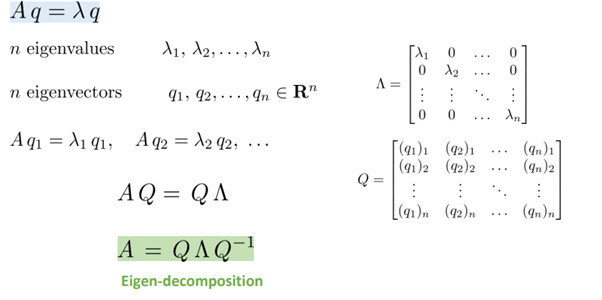

Eigen Value Decomposition#
Prepared by: Mahdieh Alizadeh
Pattern 1402 - Farvardin
Email address: Mahdieh20201@gmail.com
EigenDecompositions#
Eigenvalues and eigenvectors are easy to find with Python and NumPy. Remember, an eigenvector of a square matrix \(\textbf{A}\) is a nozero vector \(\textbf{v}\) such that multiplication by \(\textbf{A}\) alters only the scale of \(\textbf{v}\)
Suppose that we have a matrix \(A\) with the following entries:
If we apply \(A\) to any vector \(\mathbf{v} = [x, y]^\top\), we obtain a vector \(\mathbf{A}\mathbf{v} = [2x, -y]^\top\). This has an intuitive interpretation: stretch the vector to be twice as wide in the \(x\)-direction, and then flip it in the \(y\)-direction.
However, there are some vectors for which something remains unchanged. Namely \([1, 0]^\top\) gets sent to \([2, 0]^\top\) and \([0, 1]^\top\) gets sent to \([0, -1]^\top\). These vectors are still in the same line, and the only modification is that the matrix stretches them by a factor of \(2\) and \(-1\) respectively. We call such vectors eigenvectors and the factor they are stretched by eigenvalues.
In general, if we can find a number \(\lambda\) and a vector \(\mathbf{v}\) such that
We say that \(\mathbf{v}\) is an eigenvector for \(A\) and \(\lambda\) is an eigenvalue.
Finding Eigenvalues#
Let’s figure out how to find them. By subtracting off the \(\lambda \mathbf{v}\) from both sides, and then factoring out the vector, we see the above is equivalent to:
we see that \((\mathbf{A} - \lambda \mathbf{I})\) must compress some direction down to zero, hence it is not invertible, and thus the determinant is zero. Thus, we can find the eigenvalues by finding for what \(\lambda\) is \(\det(\mathbf{A}-\lambda \mathbf{I}) = 0\). Once we find the eigenvalues, we can solve \(\mathbf{A}\mathbf{v} = \lambda \mathbf{v}\) to find the associated eigenvector(s).
An Example#
Let’s see this with a more challenging matrix
If we consider \(\det(\mathbf{A}-\lambda \mathbf{I}) = 0\), we see this is equivalent to the polynomial equation \(0 = (2-\lambda)(3-\lambda)-2 = (4-\lambda)(1-\lambda)\). Thus, two eigenvalues are \(4\) and \(1\). To find the associated vectors, we then need to solve
We can solve this with the vectors \([1, -1]^\top\) and \([1, 2]^\top\) respectively.
Decomposing Matrices#
Let’s continue the previous example one step further. Let
be the matrix where the columns are the eigenvectors of the matrix \(\mathbf{A}\). Let
be the matrix with the associated eigenvalues on the diagonal. Then the definition of eigenvalues and eigenvectors tells us that
The matrix \(W\) is invertible, so we may multiply both sides by \(W^{-1}\) on the right, we see that we may write
In the next section we will see some nice consequences of this, but for now we need only know that such a decomposition will exist as long as we can find a full collection of linearly independent eigenvectors (so that \(W\) is invertible).

Operations on Eigendecompositions#
One nice thing about eigendecompositions is that we can write many operations we usually encounter cleanly in terms of the eigendecomposition. As a first example, consider:
This tells us that for any positive power of a matrix, the eigendecomposition is obtained by just raising the eigenvalues to the same power. The same can be shown for negative powers, so if we want to invert a matrix we need only consider
or in other words, just invert each eigenvalue. This will work as long as each eigenvalue is non-zero, so we see that invertible is the same as having no zero eigenvalues.
Indeed, additional work can show that if \(\lambda_1, \ldots, \lambda_n\) are the eigenvalues of a matrix, then the determinant of that matrix is
or the product of all the eigenvalues. This makes sense intuitively because whatever stretching \(\mathbf{W}\) does, \(W^{-1}\) undoes it, so in the end the only stretching that happens is by multiplication by the diagonal matrix \(\boldsymbol{\Sigma}\), which stretches volumes by the product of the diagonal elements.
Finally, recall that the rank was the maximum number of linearly independent columns of your matrix. By examining the eigendecomposition closely, we can see that the rank is the same as the number of non-zero eigenvalues of \(\mathbf{A}\).
The examples could continue, but hopefully the point is clear: eigendecomposition can simplify many linear-algebraic computations and is a fundamental operation underlying many numerical algorithms and much of the analysis that we do in linear algebra.
import numpy as np
import matplotlib.pyplot as plt
def covarianceDecomposition(cov_matrix, mean, subplot_title):
# Generate random data with 2 features
num_samples = 1000
data = np.random.multivariate_normal(mean, cov_matrix, num_samples)
# Calculate covariance matrix
cov_matrix = np.cov(data, rowvar=False)
# Calculate eigenvalues and eigenvectors
eigenvalues, eigenvectors = np.linalg.eig(cov_matrix)
# Plot the data
plt.scatter(data[:, 0], data[:, 1], alpha=0.5)
plt.xlabel('Feature 1')
plt.ylabel('Feature 2')
# Plot eigenvectors with variance captured
for i in range(len(eigenvalues)):
variance = eigenvalues[i]
scaled_eigenvector = np.sqrt(variance) * eigenvectors[:, i] / 2
plt.quiver(*mean, *scaled_eigenvector, color='r', scale=3, label=f'Eigenvalue: {eigenvalues[i]}')
plt.legend()
plt.title(subplot_title)
plt.axis('equal')
plt.grid(True)
means = [[0,0], [0,0], [0,0], [0,0]]
cov = [[[2,1],[1,2]], [[4,1],[1,4]], [[1,10],[1,2]], [[1,2],[9,2]]]
plt.figure(figsize=(15, 4)) # Adjust figure size
for i in range(4):
plt.subplot(1, 4, i+1)
covarianceDecomposition(cov[i], means[i], f'Plot {i+1}')
plt.tight_layout() # Adjust subplot spacing
plt.show()
C:\Users\Dr\AppData\Local\Temp\ipykernel_5316\3099645954.py:7: RuntimeWarning: covariance is not symmetric positive-semidefinite.
data = np.random.multivariate_normal(mean, cov_matrix, num_samples)
Explaining#
Four different types of data with means of 0 and the given covariance matrices were considered for this code. Using the numpy library, random data were generated with a multivariate normal distribution. Then, the covariance matrix of this data was calculated using the same library, and the eigenvalues and eigenvectors were computed using the linear algebra section of the library.
First, the data was plotted, and then the eigenvectors were multiplied by their corresponding eigenvalues and plotted on the data. The stretching of the eigenvectors is due to the variance (the main diagonal of the covariance matrix) in each dimension. The direction of the vectors corresponds to the variance in the dimensions of the data.